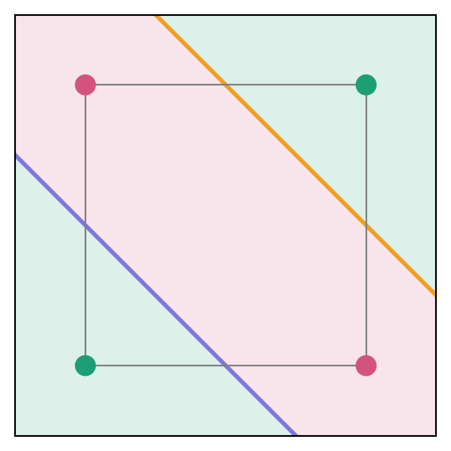

Retraining a small neural network: reorienting and building decision boundaries
We track the epochal evolution of the decision boundaries of a 3-3-1 MLP, pre-trained for one task, as it learns a new task.
Author
Shouvik Sur
Published
October 28, 2026
Introduction
Most networks in use today are not trained from scratch. A network is first trained on one task and then fine-tuned1 on another. During fine-tuning the internal representation built for the first task is partly kept and partly overwritten (Kumar et al. 2022; Kirkpatrick et al. 2017). Moreover, a narrow fine-tuning step can change a network’s behaviour far beyond the task it was fine-tuned on (Betley et al. 2025). To predict such changes, we need to know which parts of the old representation survive and which are replaced.
Inspired by model diffing methods (Lindsey et al. 2024) and the established benefit of studying toy models to understand non-trivial aspects of large neural networks2(Elhage et al. 2022), here, we will study how a network, pre-trained on \(m\)-bit parity, modifies itself to learn \(n\)-bit parity. We note that a recent study describes forgetting through the rotation and fading of feature vectors, in a toy model where all features needed for both tasks are fixed in advance and read out linearly (Masip et al. 2026). Such a model cannot build a new feature. In the present note, the features are the nonlinear decision boundaries of the hidden units, and the network must both reorient its old boundaries and build new ones when the new task requires them.
As such parity functions are the simplest Boolean functions that a single threshold unit cannot compute (Minsky and Papert 1969). A hidden layer is therefore required. In our discussion on the neural representation of 2-bit gates, the exceptional property of the XOR gate results from the fact that it is a 2-bit parity operation. In particular, the two-layer perceptron needs to learn two decision boundaries to represent XOR: considering the four possible 2-bit inputs as the four corners of a square, learning XOR correponds to a staggered segmentation of the square into two distinct regions, as depicted in Figure 1. We will utilize this geometric intuition to interpret the network’s learning as it fine-tunes on \(N\)-bit inputs with \(N>2\).
Show the code: Background script for plotting the decision boundaries for XOR
import numpy as npimport matplotlib.pyplot as pltX = np.array([[-1, -1], [-1, 1], [1, -1], [1, 1]], dtype=float) # corners of the squareTEAL, PINK ="#1D9E75", "#D4537E"LINE_COLOURS = ["#7F77DD", "#EF9F27"]def draw_square(ax, W1, b1, w2, b2, P, title=""):"""Corners coloured by P, hidden lines, regions shaded by the network output."""# shade the plane by the output of the threshold network g = np.linspace(-1.5, 1.5, 300) x1, x2 = np.meshgrid(g, g) pts = np.column_stack([x1.ravel(), x2.ravel()]) # grid points as rows h = pts @ W1.T + b1 >0# hidden codes y = (h @ w2 + b2 >0).reshape(x1.shape) # output bits ax.contourf(x1, x2, y, levels=[-0.5, 0.5, 1.5], colors=[TEAL, PINK], alpha=0.15)# hidden lines w.x + b = 0: point nearest the origin plus a direction along the line t = np.linspace(-3, 3, 2)for w, b, c inzip(W1, b1, LINE_COLOURS):if w @ w ==0: # a unit with zero weights has no linecontinue p0, d =-b * w / (w @ w), np.array([-w[1], w[0]]) / np.linalg.norm(w) ax.plot(p0[0] + t * d[0], p0[1] + t * d[1], color=c, lw=2)# square and corners ax.plot([-1, 1, 1, -1, -1], [-1, -1, 1, 1, -1], color="grey", lw=0.8) ax.scatter(X[:, 0], X[:, 1], c=[TEAL if p >0else PINK for p in P], s=80, zorder=3) ax.set_xlim(-1.5, 1.5); ax.set_ylim(-1.5, 1.5); ax.set_aspect("equal")
Show the code
P = X[:, 0] * X[:, 1] # XOR in product formfig, ax = plt.subplots(figsize=(3.6, 3.6))draw_square(ax, np.array([[1.0, 1], [1, 1]]), np.array([1.0, -1]), np.array([2.0, -2]), -1.0, P)# Remove ticks and labels on both axesax.set_xticks([])ax.set_yticks([])plt.show()

Figure 1: The corners of the unit square locate at (-1, -1), (-1, 1), (1, 1), (1, -1) [anti-clockwise]. The 2-bit parity of the \(i\)-th corner is simply \(x_i y_i\), such that the green (red) corners carry even (odd) parity. Thus the classification of the plane into the red and green regions requires two decision boundaries (the blue and orange lines)
General aspects of the geometric picture: Here, the geometric intuition that we will build for \(N\)-bit inputs is based on representing the \(2^N\) possible inputs as corners of a \(N\)-dimensional cube. The binary outcome of the task (here, parity) colors these corners either green or red. The decision boundaries that the network needs to learn in order to generalize on the task correspond to constructing independent planes that intersect all edges of the hypercube which connect corners with distinct colors.
Setup
Inputs and targets
The input is a vector of three bits, \(\vec{x}=(x_1,x_2,x_3)^T\), where each bit takes the value \(-1\) or \(+1\). The \(2^3=8\) possible inputs are the corners of a cube centred at the origin. For a set \(S\) of bit indices, the parity function is the product of those bits, \[
P_S(\vec{x})=\prod_{j\in S}x_j .
\tag{1}\]
\(P_S=+1\) if the number of \(-1\) entries among the bits in \(S\) is even, and \(P_S=-1\) if it is odd. We use three of these functions: \[
P_{12}=x_1x_2,\qquad P_{23}=x_2x_3,\qquad P_{123}=x_1x_2x_3 .
\tag{2}\]
The network outputs a bit \(y\in\{0,1\}\). The target bit for a parity \(P\) is \[
y=\frac{1-P}{2}.
\tag{3}\]
So \(y=1 \Rightarrow P=-1\) and \(y=0 \Rightarrow P=+1\).
The network
The network has three inputs, one hidden layer of three units, and one output unit (a “3-3-1” network). The hidden activations form a vector \(\vec{h}=(h_1,h_2,h_3)^T\): \[
\vec{h}=\Theta\!\left(W^{(1)}\vec{x}+\vec{b}^{(1)}\right),\qquad
y=\Theta\!\left(\vec{w}^{(2)}\cdot\vec{h}+b^{(2)}\right).
\tag{4}\]
Here \(W^{(1)}\) is a \(3\times3\) matrix whose row \(i\), written \(\vec{w}_i\), holds the input weights of hidden unit \(i\). \(\vec{b}^{(1)}\) is a 3-component vector of hidden biases. \(\vec{w}^{(2)}\) is a 3-component vector of output weights, and \(b^{(2)}\) is the output bias. \(\Theta\) is the Heaviside step function, \(\Theta(u)=1\) for \(u>0\) and \(\Theta(u)=0\) for \(u<0\), applied to each component separately. Note that \(\Theta(0)\) usually needs to be specially defined, but in all the examples below no argument of \(\Theta\) is ever exactly zero, so the exact value \(\Theta(0)\) is unimportant here.
Hidden units are planes
The \(i\)-th hidden unit switches on when \(\vec{w}_i\cdot\vec{x}+b_i>0\). The boundary between on and off is the plane \[
\vec{w}_i\cdot\vec{x}+b_i=0
\quad\Longleftrightarrow\quad
\hat{w}_i\cdot\vec{x}=d_i,
\qquad
\hat{w}_i=\frac{\vec{w}_i}{|\vec{w}_i|},\quad d_i=-\frac{b_i}{|\vec{w}_i|}.
\tag{5}\]
The unit vector \(\hat{w}_i\) is the normal of the plane3, and \(d_i\) is its signed distance from the centre of the cube. This \(i\)-th plane divides the embedding space of the cube into two regions, with the hidden unit being on for the corners of the cube that lie on the side of the plane into which \(\hat{w}_i\) points.
The plane crosses the cube only if it has corners on both of its sides. The largest value of \(\hat{w}_i\cdot\vec{x}\) over the corners is \(\sum_j|\hat{w}_{ij}|\), obtained by choosing each \(x_j\) equal to the sign of \(\hat{w}_{ij}\). The smallest value is minus the same number. The plane therefore cuts the cube when \[
|d_i|<\sum_{j=1}^{3}|\hat{w}_{ij}| ,
\tag{6}\] and lies entirely outside the cube otherwise.
Thus, the three bits \((h_1,h_2,h_3)\) of a corner record on which side of each plane the corner lies. We call them the hidden code of the corner. The output unit sees only these codes. Two corners with the same code lead to the same output, irrespective of their inputs.
Training with a smooth step
\(\Theta\) has zero slope everywhere except at \(x=0\)4, so gradient descent cannot train it. During training we therefore replace \(\Theta\) by the sigmoid \(\sigma_\beta(u)=1/(1+e^{-\beta u})\)5, in both layers of Equation 4. The sigmoid crosses \(1/2\) at \(u=0\), exactly where \(\Theta\) jumps. A hidden unit therefore has the same plane, Equation 5, whichever function we use. We train with the sigmoid and interpret the geometry, the planes and the hidden codes, with \(\Theta\)6.
Note: Multiplying all weights and biases of a layer by a positive number \(\beta\) leaves every plane, and every \(\Theta\) output, unchanged. It only sharpens the sigmoid, so the sigmoid network approaches the threshold network as \(\beta\) grows. We start training from integer threshold solutions scaled by \(\beta_h=4\) (hidden layer) and \(\beta_o=3\) (output layer). The training loss is the binary cross-entropy between \(\sigma\) of the output pre-activation and the target bit, Equation 3, averaged over the 8 corners. We use plain gradient descent on all 8 corners at once, learning rate \(0.1\), for 20000 epochs, in double precision.
Show the code: corners, parities and training
import itertoolsimport numpy as npimport torchimport matplotlib.pyplot as plttorch.set_default_dtype(torch.float64)# the 8 corners of the cube, as rows; row k is the k-th cornerX = torch.tensor(list(itertools.product([-1.0, 1.0], repeat=3)))Xn = X.numpy()def parity(bits):"""Product of the chosen bits (0-based indices) at each corner: +1 or -1."""return torch.prod(X[:, bits], dim=1)P12, P23, P123 = parity([0, 1]), parity([1, 2]), parity([0, 1, 2])# integer threshold solution of P12 (derived in the section "Starting point")W1_start = torch.tensor([[1.0, 1.0, 0.0], [1.0, 1.0, 0.0], [0.0, 0.0, 0.0]])b1_start = torch.tensor([1.0, -1.0, -1.0])w2_start = torch.tensor([2.0, -2.0, 0.0])b2_start =-1.0def train(P, epochs=20000, lr=0.1, beta_h=4.0, beta_o=3.0):"""Train the 3-3-1 sigmoid network on parity P, starting from the scaled P12 solution. Returns the weights before every update, as numpy arrays (epoch is the first index).""" hidden = torch.nn.Linear(3, 3) output = torch.nn.Linear(3, 1)with torch.no_grad(): hidden.weight.copy_(beta_h * W1_start) hidden.bias.copy_(beta_h * b1_start) output.weight.copy_(beta_o * w2_start.reshape(1, 3)) output.bias.fill_(beta_o * b2_start) optimiser = torch.optim.SGD(list(hidden.parameters()) +list(output.parameters()), lr=lr) loss_fn = torch.nn.BCEWithLogitsLoss() # sigmoid + binary cross-entropy, mean over corners y = (1- P) /2# target bits record = {"W1": [], "b1": [], "w2": [], "b2": []}for epoch inrange(epochs +1): record["W1"].append(hidden.weight.detach().numpy().copy()) record["b1"].append(hidden.bias.detach().numpy().copy()) record["w2"].append(output.weight.detach().numpy()[0].copy()) record["b2"].append(float(output.bias.detach()[0])) z = output(torch.sigmoid(hidden(X))).squeeze(1) loss = loss_fn(z, y) optimiser.zero_grad() loss.backward() optimiser.step()return {key: np.array(val) for key, val in record.items()}
Show the code: threshold reading and cube drawing
from mpl_toolkits.mplot3d.art3d import Poly3DCollectionTEAL, PINK, RED, GREY ="#1D9E75", "#D4537E", "#E24B4A", "#888780"UNIT_COLOURS = ["#7F77DD", "#EF9F27", "#378ADD"] # planes of units 1, 2, 3EDGES = [(i, j) for i inrange(8) for j inrange(i +1, 8)if np.sum(Xn[i] != Xn[j]) ==1] # the 12 cube edgesdef codes(W1, b1):"""Hidden codes (8 x 3 array of 0/1) read with the Heaviside step."""return (Xn @ W1.T + b1 >0).astype(int)def outputs(W1, b1, w2, b2):"""Output bits of the threshold network at the 8 corners."""return (codes(W1, b1) @ w2 + b2 >0).astype(int)def section(w, b):"""Corners of the polygon where the plane w.x + b = 0 cuts the cube (empty if it misses)."""if np.linalg.norm(w) <1e-8:return np.zeros((0, 3)) pts = []for i, j in EDGES: fi, fj = w @ Xn[i] + b, w @ Xn[j] + bif fi * fj <0: t = fi / (fi - fj) pts.append(Xn[i] + t * (Xn[j] - Xn[i]))iflen(pts) <3:return np.zeros((0, 3)) pts = np.array(pts) centre = pts.mean(axis=0) n = w / np.linalg.norm(w) u = np.cross(n, [1, 0, 0]) ifabs(n[0]) <0.9else np.cross(n, [0, 1, 0]) u = u / np.linalg.norm(u) v = np.cross(n, u) angle = np.arctan2((pts - centre) @ v, (pts - centre) @ u)return pts[np.argsort(angle)]def draw_cube(ax, W1, b1, P, title="", show_codes=True):"""Cube with corners coloured by parity P, hidden planes, and edge styles: dashed = both ends have the same P; dark = different P, cut by a plane; thick red = different P, cut by no plane."""for i inrange(3): poly = section(W1[i], b1[i])iflen(poly): ax.add_collection3d(Poly3DCollection([poly], alpha=0.25, facecolor=UNIT_COLOURS[i], edgecolor=UNIT_COLOURS[i]))for i, j in EDGES: seg = np.array([Xn[i], Xn[j]]).Tif P[i] == P[j]: ax.plot(*seg, color=GREY, lw=0.8, ls="--")elifany((W1[k] @ Xn[i] + b1[k]) * (W1[k] @ Xn[j] + b1[k]) <0for k inrange(3)): ax.plot(*seg, color="#444441", lw=1.4)else: ax.plot(*seg, color=RED, lw=3.5) H = codes(W1, b1)for k inrange(8): ax.scatter(*Xn[k], color=TEAL if P[k] >0else PINK, s=60, depthshade=False)if show_codes: ax.text(*(1.3* Xn[k]), "".join(map(str, H[k])), fontsize=7, family="monospace", ha="center") ax.set_xlim(-1.2, 1.2); ax.set_ylim(-1.2, 1.2); ax.set_zlim(-1.2, 1.2) ax.set_box_aspect((1, 1, 1)) ax.set_xticks([]); ax.set_yticks([]); ax.set_zticks([]) ax.set_xlabel("$x_1$", labelpad=-12); ax.set_ylabel("$x_2$", labelpad=-12) ax.set_zlabel("$x_3$", labelpad=-12) ax.view_init(elev=20, azim=27) # no plane of interest is seen edge-on from here ax.set_title(title, fontsize=9)
What rest of this note shows
A 3-3-1 network that has learned \(P_{12}\) is retrained, first on \(P_{23}\) and then on \(P_{123}\). For \(P_{23}\), the network keeps both of its planes and turns them, as a pair, into a new orientation. For \(P_{123}\), the network turns its two planes into new orientations and, in addition, builds a third plane from a hidden unit that was idle. In both cases we identify the individual events through which the old solution evolves into the new one.
Starting point: the \(P_{12}\) solution
Truth table
\(P_{12}=x_1x_2\) does not depend on \(x_3\), which implies that, in our solution for the network parameters needed to learn the current task, \(x_3\) can be a cyclic or “dummy” variable. It is convenient to adopt an equivalent definition of \(P_{12}\) as the sum \(s_{12}=x_1+x_2\in\{-2,0,2\}\).
In the spirit of the 2-bit gates studied earlier, we construct a truth table for the present task:
\(x_1\)
\(x_2\)
\(s_{12}\)
\(P_{12}\)
\(y\)
\(-1\)
\(-1\)
\(-2\)
\(+1\)
0
\(-1\)
\(+1\)
\(0\)
\(-1\)
1
\(+1\)
\(-1\)
\(0\)
\(-1\)
1
\(+1\)
\(+1\)
\(+2\)
\(+1\)
0
We readily identify the XOR gate embedded within the \(x_1\)-\(x_2\) subspace.
Hidden layer
We place unit 1 in the gap between \(s_{12}=-2\) and \(s_{12}=0\), and unit 2 in the gap between \(s_{12}=0\) and \(s_{12}=2\):
Both planes contain the \(x_3\) direction, so neither depends on \(x_3\). Unit 3 is switched off: we give it zero input weights and a negative bias, \(h_3=\Theta(-1)=0\) at every corner. It has no plane. Each corner now carries one of three codes:
\(s_{12}\)
\(h_1\)
\(h_2\)
\(h_3\)
code
\(-2\)
0
0
0
000
\(0\)
1
0
0
100
\(+2\)
1
1
0
110
Output unit
With \(h_3=0\) throughout, the output pre-activation is \(w^{(2)}_1h_1+w^{(2)}_2h_2+b^{(2)}\). The three codes impose three inequalities: \[
\begin{aligned}
\text{code }000\ (y=0):&\quad b^{(2)}<0,\\
\text{code }100\ (y=1):&\quad w^{(2)}_1+b^{(2)}>0,\\
\text{code }110\ (y=0):&\quad w^{(2)}_1+w^{(2)}_2+b^{(2)}<0 .
\end{aligned}
\tag{8}\]
We choose \(\vec{w}^{(2)}=(2,-2,0)\) and \(b^{(2)}=-1\). Then \(b^{(2)}=-1<0\), \(w^{(2)}_1+b^{(2)}=1>0\), and \(w^{(2)}_1+w^{(2)}_2+b^{(2)}=-1<0\) will satisfy the three inequalities in Equation 8.
Collecting the solutions, we obtain the starting parameters: \[
W^{(1)}=\begin{pmatrix}1&1&0\\1&1&0\\0&0&0\end{pmatrix},\quad
\vec{b}^{(1)}=\begin{pmatrix}1\\-1\\-1\end{pmatrix},\quad
\vec{w}^{(2)}=\begin{pmatrix}2&-2&0\end{pmatrix},\quad
b^{(2)}=-1 .
\tag{9}\]
Figure 2 shows the two planes. It should be compared with Figure 1 which is the projection of the figure on the \(x_1\)-\(x_2\) plane. In this t3D setting, we note that every edge of the cube along \(x_1\) or \(x_2\) joins corners with different \(P_{12}\), and each such edge is cut by one of the planes. The edges along \(x_3\) join corners with the same \(P_{12}\), and need no cut.
Figure 2: The starting network, coloured by \(P_{12}\) (green \(+1\), red \(-1\)). Purple and amber: the planes \(x_1+x_2=-1\) and \(x_1+x_2=+1\) of units 1 and 2. Labels: hidden codes \(h_1h_2h_3\). Dark edges join corners of different \(P_{12}\) and are cut by a plane; dashed edges join corners of equal \(P_{12}\).
Retraining on new tasks
We now retrain this network on two distinct new tasks. Before embarking on the details, we briefly note a connection of the present work with an earlier work by Pratt (Pratt 1992), where, with the objective of accelerating the learning of a new task, Pratt initialized networks using hidden-unit hyperplanes from a previously trained model. By rescaling each unit’s weights based on how well its plane separated the new data, the algorithm kept well-placed boundaries firm while leaving poorly placed ones free to adapt. Although this established that learned boundaries can be reused to speed up learning, it did not systematically track how the hyperplanes move during retraining, nor did it ask whether idle units can be recruited to construct new boundaries. Below, we map these aspects across two retraining tasks.
The first task corresponds to an “orthogonal” embedding of the XOR gate in the \(x_2\)-\(x_3\) plane: the 2-bit parity \(P_{23}\). This will require the two decision boundaries to be non-trivial on the \(x_2\)-\(x_3\) plane, as \(x_1\) becomes cyclic. Therefore, we expect the retraining will rotate the original decision boundaries by \(60^\circ\) (see below: Equation 11).
The second task belongs to a new category as it involves all three bits: \(P_{123} = x_1 x_2 x_3\). The decision boundaries in this case is more non-trivial and numerous. Naively, for an \(N\)-bit input the maximal parity\(P_{12\ldots N} = \prod_{j=1}^N x_j\) can be solved by \(N\) decision boundaries, and a geometrically appealing solution exists where the \(N\) boundaries are equally spaced along the body-diagonal of the \(N\) dimensional cube. Although this intuition is true for \(N\leq 5\), for larger \(N\) fewer than \(N\) decision boundaries may suffice (Saks 1993). Two points are of note:
Given an ideal mathematical solution, such as the one above, the retraining may settle for different orientation of the decision boundaries.
Although for larger \(N\) it is expected that a smaller number of decision boundaries suffices, it is unclear whether a 1-hidden layer network will be able to find that solution.
For the present case \(N=3\) and we shall explicitly study the generation of the third decision boundary, along with reorientation of the two boundaries that already exists.
Retraining I: \(P_{12}\to P_{23}\)
We start from Equation 9, scaled as described in the Setup, and train on \(P_{23}\).
Before discussing the details of the retraining, we note that \(P_{23}=x_2x_3\) is obtained from \(P_{12}=x_1x_2\) by exchanging the roles of \(x_1\) and \(x_3\). Exchanging \(x_1\) and \(x_3\) in Equation 7 gives two planes that solve \(P_{23}\):
\[
x_2+x_3=-1,\qquad x_2+x_3=+1 .
\tag{10}\]
Two planes are therefore enough. To reach them, the network has to turn its planes: the normals must move from the direction \((1,1,0)/\sqrt{2}\) to the direction \((0,1,1)/\sqrt{2}\). The angle \(\alpha\) between these directions follows from their scalar product,
Show the code: training on P23 and listing the events
run23 = train(P23)def events(run, P):"""Epochs at which any corner changes side of any plane, with the corners involved.""" out = [] previous = codes(run["W1"][0], run["b1"][0])for epoch inrange(1, len(run["W1"])): current = codes(run["W1"][epoch], run["b1"][epoch]) moved = np.where((current != previous).any(axis=1))[0]iflen(moved): correct =int((outputs(run["W1"][epoch], run["b1"][epoch], run["w2"][epoch], run["b2"][epoch]) == (1- P) /2).sum())for k in moved: out.append((epoch, tuple(int(v) for v in Xn[k]),"".join(map(str, previous[k])), "".join(map(str, current[k])), correct)) previous = currentreturn outfor epoch, corner, old, new, correct in events(run23, P23.numpy()):print(f"epoch {epoch:5d}: corner {corner} code {old} -> {new} output correct on {correct}/8")
At the start the planes are those of Figure 2, and the network is correct on \(P_{23}\) at 4 of the 8 corners. These are the corners with \(x_1=x_3\). There \(P_{23}=x_2x_3\) equals \(P_{12}=x_1x_2\), so the old answer happens to be right. At the four corners with \(x_1\neq x_3\) the two parities differ, and the old answer is wrong.
Training repairs these four corners one at a time. Each repair is a single event: one corner crosses one plane, so its hidden code changes.
epoch
corner \((x_1,x_2,x_3)\)
plane crossed
code before \(\to\) after
390
\((-1,-1,+1)\)
enters the on side of plane 1
\(000\to100\)
465
\((+1,-1,-1)\)
leaves the on side of plane 1
\(100\to000\)
489
\((+1,+1,-1)\)
leaves the on side of plane 2
\(110\to100\)
525
\((-1,+1,+1)\)
enters the on side of plane 2
\(100\to110\)
All four corners have \(x_1\neq x_3\). After the event at epoch 525 the codes depend only on \(x_2+x_3\), and the network computes \(P_{23}\) at all 8 corners. Since the target solution is reached by epoch 525, the network no longer qualitatively modifies itself under additional epochal evolution. Figure 3 shows the cube at each event; note the quantitative modifications to the decision boundaries beyond epoch 525. In the asymptotic regime, the new decision boundaries approach the estimate in Equation 11.
Figure 3: Retraining on \(P_{23}\). Corners are coloured by the new target \(P_{23}\). Each panel is one epoch: the start, the four events, and the end of training. Thick red edges join corners of different \(P_{23}\) that no plane separates. The two planes turn together, from containing the \(x_3\) direction to containing the \(x_1\) direction. Unit 3 never builds a plane inside the cube.
Retraining II: \(P_{12}\to P_{123}\), reorientation and construction
We start again from Equation 9 and now train on \(P_{123}=x_1x_2x_3\) which changes sign when any single bit is flipped. All 12 edges of the cube therefore join corners with different targets, and all 12 must be cut by the decision boundaries.
One plane cuts at most 6 edges. A plane that crosses the cube meets it in a flat polygon. Each side of the polygon lies in one face of the cube, and different sides lie in different faces. The cube has 6 faces, so the polygon has at most 6 sides, and therefore at most 6 corners. Each corner of the polygon is a point where the plane crosses one edge of the cube. So a plane crosses at most 6 edges (O’Neil 1971). Two planes cut at most 12 edges. They could cut all 12 only if both cross sections were hexagons, and if the two hexagons crossed different edges.
Which planes cut 6 edges. Suppose a plane leaves \(k\) corners on one side, and \(e\) edges join two of these corners. Each corner has 3 edges. Of the \(3k\) edges leaving these corners, the \(e\) internal ones are counted twice and are not cut. The number of cut edges is therefore \(3k-2e\). A hexagon needs \(3k-2e=6\). One can check, by listing the possible groups of corners, that the only groups a plane can actually separate with \(3k-2e=6\) are a corner together with its three neighbours (\(k=4\), \(e=3\)). Such a plane is perpendicular to the body diagonal through that corner. It crosses the cube in a hexagon around the middle of that diagonal, and it misses exactly the 6 edges that touch the two ends of the diagonal. Panel (a) of Figure 4 shows the hexagon perpendicular to the diagonal from \((-1,-1,-1)\) to \((1,1,1)\).
Two hexagons always miss an edge. Let the two hexagons be perpendicular to the diagonals \(A\bar{A}\) and \(B\bar{B}\), where \(\bar{A}\) is the corner opposite to \(A\). Every corner other than \(A\) and \(\bar{A}\) is a neighbour of either \(A\) or \(\bar{A}\). Suppose \(B\) is a neighbour of \(A\). The edge from \(A\) to \(B\) touches the diagonal \(A\bar{A}\), so the first hexagon misses it. It also touches the diagonal \(B\bar{B}\), so the second hexagon misses it too. Panel (b) of Figure 4 shows this for the diagonals through \((1,1,1)\) and through \((1,1,-1)\). Two edges along \(x_3\) remain uncut. We will meet these two edges again during training.
\(P_{123}\) therefore needs a third plane. Our network has a third hidden unit, but at the start it is switched off. The network will have to build the third plane from this unit.
Figure 4: Corners coloured by \(P_{123}\). Thick red edges join corners of different \(P_{123}\) and are cut by no plane. (a) One plane perpendicular to the body diagonal \([111]\) cuts 6 of the 12 edges. (b) A second hexagonal plane, perpendicular to \([11\bar{1}]=(1,1,-1)\), leaves two edges along \(x_3\) uncut. A third plane is needed.
Show the code: training on P123 and listing the events
At the start the network is correct on \(P_{123}\) at the 4 corners with \(x_3=+1\), where \(P_{123}=P_{12}\). It is wrong at the 4 corners with \(x_3=-1\), where \(P_{123}=-P_{12}\). Nothing in the starting network depends on \(x_3\), so it cannot treat the two faces \(x_3=\pm1\) differently. Retraining proceeds in three stages (Figure 5).
Stage 1: the two planes turn in opposite directions
The normal of plane 1 tilts towards \(+x_3\), and the normal of plane 2 tilts towards \(-x_3\). The planes now cut the faces \(x_3=+1\) and \(x_3=-1\) along different lines. Two events follow:
epoch
corners \((x_1,x_2,x_3)\)
plane crossed
code before \(\to\) after
492
\((-1,+1,-1)\) and \((+1,-1,-1)\)
leave the on side of plane 1
\(100\to000\)
746
the same two corners
enter the on side of plane 2
\(000\to010\)
After epoch 492 the network is correct at 6 of the 8 corners.
Stage 2: a long wait for a third plane
From epoch 746 to epoch 8997 no corner crosses any plane. Two edges along \(x_3\) are uncut: the edge from \((-1,-1,-1)\) to \((-1,-1,+1)\), whose ends share the code \(000\), and the edge from \((1,1,-1)\) to \((1,1,+1)\), whose ends share the code \(110\). These are the two edges that two planes can never cut together (Figure 4 b). The network needs a plane between the faces \(x_3=-1\) and \(x_3=+1\).
Unit 3 starts with zero input weights, so its plane is not defined: by Equation 5 its distance \(|d_3|=|b_3|/|\vec{w}_3|\) from the centre is infinite. During this stage \(\vec{w}_3\) grows slowly from zero. Its plane exists from then on, but far outside the cube, and it moves towards the cube as \(|\vec{w}_3|\) grows (Figure 6).
Stage 3: the third plane arrives
Near epoch 9000 the plane of unit 3 reaches the cube. It is nearly horizontal, with its normal pointing almost along \(-x_3\). It enters through the face \(x_3=-1\) and sweeps the corners of that face onto its on side within three epochs:
epoch
corners \((x_1,x_2,x_3)\)
code before \(\to\) after
8997
\((+1,+1,-1)\)
\(110\to111\)
8998
\((-1,+1,-1)\) and \((+1,-1,-1)\)
\(010\to011\)
9000
\((-1,-1,-1)\)
\(000\to001\)
From epoch 9000 the network is correct at all 8 corners. The plane settles at \(x_3\approx-0.13\), between the two faces.
Figure 5: Retraining on \(P_{123}\), coloured by \(P_{123}\). From left: the start; the two events of stage 1 (epochs 492 and 746); the plateau of stage 2 (epoch 5000), with two uncut edges along \(x_3\); the end of stage 3 (epoch 9000), when the blue plane of unit 3 has entered between the faces; and the end of training.
Figure 6: Distance \(|d_3|\) of the plane of unit 3 from the centre of the cube, divided by the largest distance at which this plane still cuts the cube, \(\sum_j|\hat{w}_{3j}|\) (Equation 6). The plane is outside the cube above the dashed line and inside it below. It is undefined at epoch 0, where \(\vec{w}_3=0\).
The final arrangement
At the end of training the three planes are:
Plane 1 passes through the centre, with normal \((0.61,0.61,0.50)\), about \(5^\circ\) from the body diagonal \((1,1,1)/\sqrt{3}\).
Plane 2 passes through the centre, with normal \((0.61,0.61,-0.51)\), about \(5^\circ\) from the body diagonal \((1,1,-1)/\sqrt{3}\).
Plane 3 is nearly horizontal, at \(x_3\approx-0.13\).
Planes 1 and 2 are close to the two hexagons of Figure 4 (b), and plane 3 cuts the two edges they leave uncut. The output weights are \(\vec{w}^{(2)}=(9.30,\,-9.56,\,8.54)\) and \(b^{(2)}=-4.01\). We check the output at every code:
corners \((x_1,x_2,x_3)\)
code
\(\vec{w}^{(2)}\cdot\vec{h}+b^{(2)}\)
\(y\)
target \(y\)
\((-1,-1,+1)\)
000
\(-4.01\)
0
0
\((-1,+1,+1)\), \((+1,-1,+1)\)
100
\(9.30-4.01=5.29\)
1
1
\((+1,+1,+1)\)
110
\(9.30-9.56-4.01=-4.27\)
0
0
\((-1,-1,-1)\)
001
\(8.54-4.01=4.53\)
1
1
\((-1,+1,-1)\), \((+1,-1,-1)\)
011
\(-9.56+8.54-4.01=-5.03\)
0
0
\((+1,+1,-1)\)
111
\(9.30-9.56+8.54-4.01=4.27\)
1
1
This satisfies the task. The table also shows how the network computes \(P_{123}=P_{12}\,x_3\). On the face \(x_3=+1\) (first three rows), planes 1 and 2 compute the old XOR pattern of \(P_{12}\). On the face \(x_3=-1\) (last three rows), unit 3 is on and reverses the answer. The old planes have been turned and reused, and the new plane switches between the two faces.
Summary
\(P_{12}\to P_{23}\)
\(P_{12}\to P_{123}\)
planes needed by the new task
2
3
what happens to planes 1 and 2
turn together by \(60^\circ\)
turn in opposite directions, into two hexagons
new plane built
no
yes, from the idle unit 3
events
4 single-corner crossings, epochs 390–525
2 crossings (492, 746), a plateau, then 3 crossings (8997–9000)
new task solved at epoch
525
9000
The two retrainings show the two things a network can do with its decision boundaries when the task changes. When the new task needs no more planes than the old one, the network keeps its planes and gives them a new orientation. When the new task needs more planes, the network also turns its old planes and, in addition, builds a new one from an idle unit. In our run, building took about 17 times longer than turning alone. In both cases the old representation is taken apart, and the new one assembled, through a short list of events in which single corners cross single planes. While the turning of decision planes mirrors the feature rotation described by Masip et al. (Masip et al. 2026), the birth of a new plane from an uncommitted unit represents a fundamentally different process. Because their framework fixes all features in advance, it cannot capture the dynamic creation of new decision boundaries.
In a recent teacher-student model, a network learning a second task was shown to either re-use the hidden units specialised on the first task or activates unused ones (Lee et al. 2022), provided the units have specialised (Jarvis et al. 2025). Our starting network is fully specialised by construction: retraining on \(P_{23}\) re-uses both units, while retraining on \(P_{123}\) also activates the idle third unit. Our case differs from theirs in three ways, however. First, it gives an exact geometric picture of both responses. In the teacher-student model, re-use and activation are inferred from overlaps between student and teacher weights, averaged over high-dimensional Gaussian inputs. Here, re-use is seen as decision planes turning, activation is seen as a new plane entering the cube, and the whole process is a finite list of events in which a single corner crosses a single plane. Second, the activation of unit 3 is forced by the geometry of the cube, since two planes cannot solve \(P_{123}\), whereas in the teacher-student model activation is set by task similarity. Third, different parities are uncorrelated over the corners of the cube, so a single measure of task similarity does not distinguish \(P_{23}\) from \(P_{123}\); what distinguishes them is the number of decision boundaries each one requires.
References
Betley, Jan et al. 2025. “Emergent Misalignment: Narrow Finetuning Can Produce Broadly Misaligned LLMs.” Preprint. https://arxiv.org/abs/2502.17424.
Jarvis, Devon, Sebastian Lee, Clementine Domine, Andrew M. Saxe, and Stefano Sarao Mannelli. 2025. “A Theory of Initialisation’s Impact on Specialisation.”Journal of Statistical Mechanics: Theory and Experiment 2025: 114001. https://doi.org/10.1088/1742-5468/ae1214.
Kirkpatrick, James et al. 2017. “Overcoming Catastrophic Forgetting in Neural Networks.”Proceedings of the National Academy of Sciences 114: 3521–26.
Kumar, Ananya, Aditi Raghunathan, Robbie Jones, Tengyu Ma, and Percy Liang. 2022. “Fine-Tuning Can Distort Pretrained Features and Underperform Out-of-Distribution.”International Conference on Learning Representations (ICLR). https://arxiv.org/abs/2202.10054.
Lee, Sebastian, Stefano Sarao Mannelli, Claudia Clopath, Sebastian Goldt, and Andrew Saxe. 2022. “Maslow’s Hammer in Catastrophic Forgetting: Node Re-Use Vs. Node Activation.”Proceedings of the 39th International Conference on Machine Learning, PMLR 162, 12455–77. https://proceedings.mlr.press/v162/lee22g.html.
Lindsey, Jack, Adly Templeton, Jonathan Marcus, Thomas Conerly, Joshua Batson, and Christopher Olah. 2024. “Sparse Crosscoders for Cross-Layer Features and Model Diffing.” Transformer Circuits Thread. https://transformer-circuits.pub/2024/crosscoders/index.html.
Masip, Sergi, Gido M. van de Ven, Javier Ferrando, and Tinne Tuytelaars. 2026. “Putting a Face to Forgetting: Continual Learning Meets Mechanistic Interpretability.”Conference on Lifelong Learning Agents (CoLLAs). https://arxiv.org/abs/2601.22012.
Minsky, Marvin, and Seymour Papert. 1969. Perceptrons: An Introduction to Computational Geometry. MIT Press.
O’Neil, Patrick E. 1971. “Hyperplane Cuts of an n-Cube.”Discrete Mathematics 1: 193–95.
Saks, Michael E. 1993. “Slicing the Hypercube.” In Surveys in Combinatorics, 1993, edited by K. Walker. London Mathematical Society Lecture Note Series. Cambridge University Press.
Footnotes
Fine-tuning in machine learning usually implies using the weights of a pre-trained network as the initial weights for gradient training on a new task. This is entire different from how this term is used in physics.↩︎
In a small network every internal quantity can be listed, and every possible configuration can be checked. The method then works like an exactly solvable model in physics: it shows clearly what can happen, and it can serve as a test case for tools built for larger systems.↩︎
The plane is defined as the set of all points/vectors \(\vec x\) with the same projection (\(d_i\)) on \(\hat w_i\). When the projection vanishes (i.e. \(d_i = 0\)), it is straightforward to verify that \(\hat w_i\) is normal to the plane.↩︎
Note that \(\partial_x \Theta(x) = \delta(x)\), the Dirac delta-function.↩︎
This is the Fermi-Dirac distribution function and \(\beta\) can be interpreted as inverse temperature.↩︎
Formally, \(\lim_{\beta \to \infty} \sigma_\beta(x) \to \Theta(x)\). Therefore, for sufficiently large \(\beta\) the sigmoid and \(\Theta\) classifiers are expected to agree on the geometric characterization we use here. For the moderate values of \(\beta\) used in the numerical computations, one can always verify the agreement. We note that for small \(\beta\) some discrepancy/ambiguities may exist.↩︎